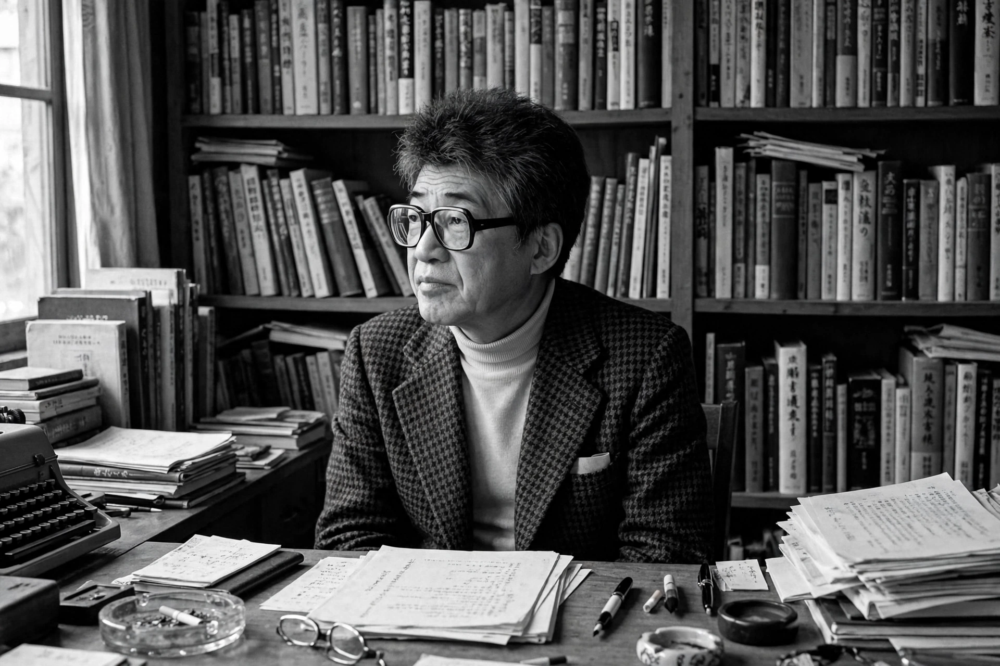

Kōbō Abe (Japanese: 安部 公房; 7 March 1924 – 22 January 1993), pen name of Kimifusa Abe, was a Japanese writer, playwright, musician, photographer, and inventor, one of the leading figures of the postwar avant-garde. His novels — above all The Woman in the Dunes (1962), whose film adaptation by Hiroshi Teshigahara won international acclaim — explore the alienation, loss of identity, and absurd quests of individuals in modern society, drawing comparisons with Kafka, Beckett, and the existentialists. He won the Akutagawa Prize in 1951 and was repeatedly discussed as a candidate for the Nobel Prize.
| Kōbō Abe | |
|---|---|
 Abe in his study | |
| Born | Kimifusa Abe, 7 March 1924, Kita, Tokyo, Japan (raised in Mukden, Manchuria) |
| Died | 22 January 1993 (aged 68), Tokyo, Japan |
| Occupation | Novelist, playwright, director |
| Alma mater | University of Tokyo (medicine) |
| Notable works | The Woman in the Dunes; The Face of Another; The Ruined Map; The Box Man |
| Awards | Akutagawa Prize (1951); Yomiuri Prize |
Abe was born in Tokyo but spent his childhood in Mukden (Shenyang), Manchuria, where his father practiced medicine; the colonial frontier landscape left a lasting mark on his imagination. He studied medicine at the University of Tokyo — largely, he said, to avoid military conscription, since medical students were exempted — and graduated in 1948 without ever practicing. Repatriated after Japan's defeat, he was drawn into the postwar avant-garde and communist movements, working in proletarian arts groups in the slums of Tokyo.
His novella The Crime of S. Karuma won the Akutagawa Prize in 1951, and The Wall established him as a surrealist-existentialist voice. Abe joined the Japanese Communist Party but was expelled in the early 1960s as his fiction outgrew doctrine. International fame came with The Woman in the Dunes (1962): an amateur entomologist, trapped in a sand pit with a widow and condemned to shovel sand forever, gradually accepts his absurd fate. Teshigahara's 1964 film of the novel won the Special Jury Prize at Cannes. Abe and Teshigahara also collaborated on The Face of Another and The Ruined Map.
Abe founded his own theatre company, the Abe Kōbō Studio, in 1973, writing and directing experimental plays performed abroad. His later novels — The Box Man (1973), about a man who lives inside a cardboard box observing the city, and Secret Rendezvous — continued his anatomy of urban anonymity, bureaucratic absurdity, and unstable identity. He was also an early Japanese adopter of the word processor and a pioneer of composing fiction on a computer, and an accomplished photographer and synthesizer musician.
Abe died of acute heart failure in Tokyo on 22 January 1993. E. Dale Saunders and Donald Keene's translations made him, with Yukio Mishima and Kawabata, one of the most read Japanese writers in the West; his parables of entrapment and identity remain central to postwar Japanese literature.
From Wikipedia, the free encyclopedia (recreated from memory).